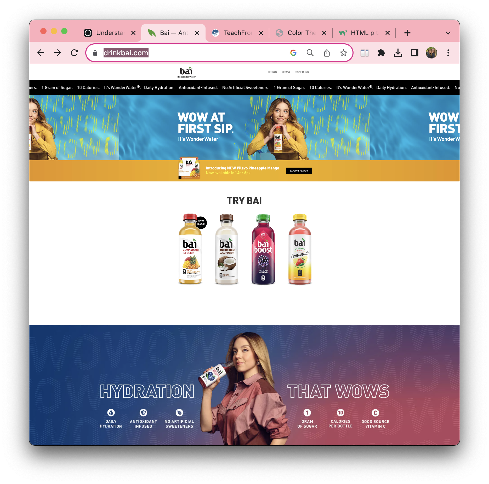
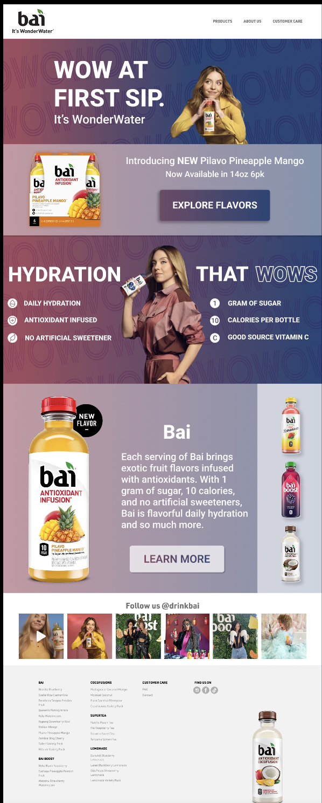

My Blogs
Choose (one page/screen of) a UI. You can choose a desktop app, a mobile app, a video game, a webpage, or whatever you like. Take a screenshot.
Analyze the original color scheme: Analogous (Green, Blue, Violet) Does it fit into one of the harmonious combinations we discussed in class? Yes! But there are lots of instances of a yellow-orange throughout the page that are less pleasant to see. What personality or mood does the scheme convey? What do you think the designers were hoping for you to feel? The mood is very modern, with gradients that feel similar to liquid since the company specializes in health drinks. Company wants its customers to feel peaceful and conscious.
Recreate that UI in some way, maintaining its original coloring. You can sketch it by hand, mock it up in Photoshop or Illustrator, build it in Figma, use the shapes on PowerPoint; the format is flexible. You can omit needless details like long bits of copy, the specific buttons on the navigation bar, etc. The goal of this is to create an accurate representation of the page that makes clear where colors are being used and which colors are being used for which function (both signal and noise).
Make three more versions of your recreation, each with a different color scheme of your choosing. Try to provide a wide range of moods with your color schemes. For each color scheme, conduct the analysis you did in #2.
Which color scheme is the most effective? Why? How are you defining effective?
Write a blog post for your portfolio that tells the story of this exercise. (Omit the fact that this is an assignment. Remember, this will be on your public portfolio!) Be sure to include your original screenshot, your true recreation, all three modified versions, and your analyses.